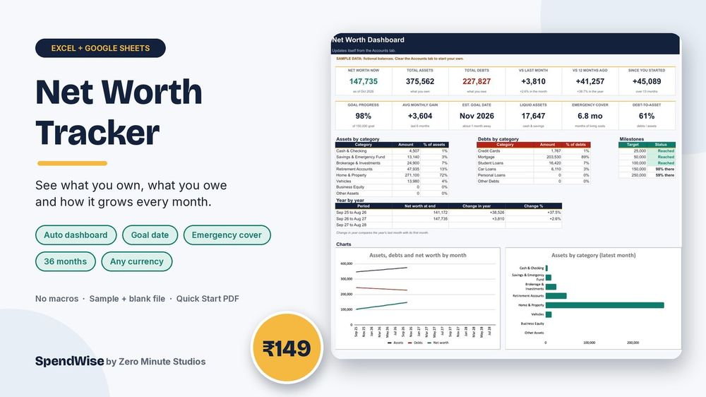
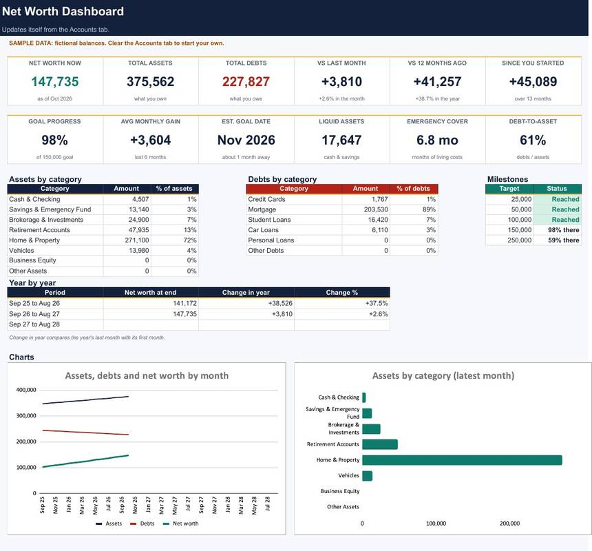
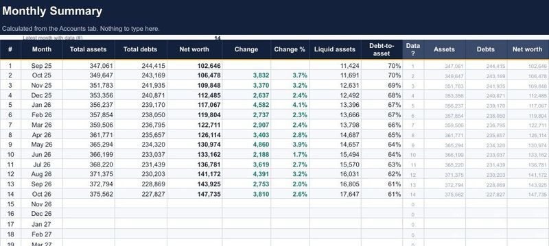

Net Worth Tracker for Excel & Google Sheets

Your bank balance is not your net worth. Add what you own, subtract what you owe, and watch the total move month by month. One file shows your net worth, how it changed, how many months of living costs your cash covers and when you are on track to hit your goal.
- Dashboard: net worth now, change vs last month, vs 12 months ago and since you started
- Goal progress, average monthly gain and an estimated goal date, plus five milestones
- Emergency-fund cover in months and debt-to-asset ratio
- Assets and debts by category, year-by-year view and two charts
- Accounts tab for up to 60 accounts across 36 months; Account Snapshot shows what moved
- Editable categories, any currency, no macros
- You get a sample file with fictional data, a blank file and a 2-page Quick Start PDF
Preview


FAQ
Does it work in Google Sheets? Yes. Upload the .xlsx to Google Drive and save it as a Google Sheet, or use Excel 2010 or newer.
Can I use my own currency? Yes. The file shows plain numbers, so type amounts in any currency.
How do I get it? Instantly after payment: a sample .xlsx, a blank .xlsx and a 2-page Quick Start PDF.
A tracking tool, not financial advice.
We don't do refund & return ✌️